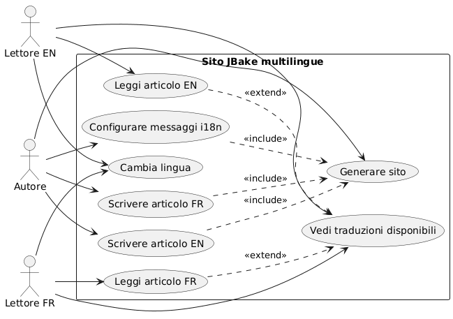
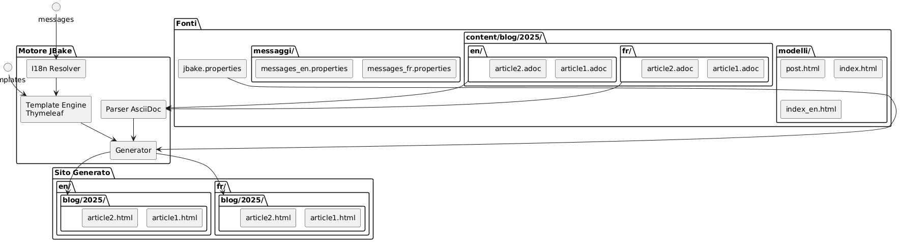
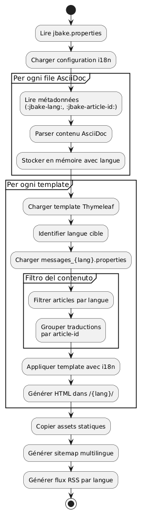

Internazionalizzazione di un sito statico JBake con Thymeleaf
Publié le 20 October 2025
Introduzione
L’internationalizzazione (i18n) di un sito statico può sembrare complesso a prima vista, ma JBake combinato con Thymeleaf offre soluzioni eleganti per creare un sito multilingue. In questo articolo, vi mostrerò come ho implementato l’i18n sul mio blog, coprendo sia il templating che la gestione degli articoli in più lingue.
Diagramma di casi d’uso (Use Case)

Architettura dell’internazionalizzazione
Il nostro approccio si basa su due pilastri:
-
L’internazionalizzazione del templatingutilizzo dei file di messaggi Thymeleaf per gli elementi dell’interfaccia
-
L’i18n del contenutoorganizzazione degli articoli per lingua in una struttura di cartelle dedicata
Diagramma di struttura (Organizzazione dei file)

Perché questo approccio?
Questa separazione permette di:
-
Mantenere la coerenza nell’interfaccia indipendentemente dalla lingua
-
Gestire indipendentemente il contenuto e le traduzioni degli articoli
-
Facilitare l’aggiunta di nuove lingue senza un refactoring importante
-
Consentire articoli disponibili solo in alcune lingue
Diagramma dei componenti

I18n del templating con Thymeleaf
Struttura dei file di messaggi
Il primo passaggio consiste nel creare i file di proprietà per ogni lingua supportata :
src/jbake/templates/
├── messages.properties # Fallback par défaut
├── messages_fr.properties # Français
├── messages_en.properties # Anglais
└── messages_de.properties # AllemandContenuto dei file dei messaggi
Ecco un esempio di file`messages_fr.properties`:
# Navigation
nav.home=Accueil
nav.blog=Blog
nav.about=À propos
nav.contact=Contact
# Articles
article.readmore=Lire la suite
article.published=Publié le
article.tags=Étiquettes
article.also.available=Également disponible en
# Interface
site.title=Mon Blog Technique
site.description=Partage de connaissances et expériences
footer.copyright=© 2025 Tous droits réservés
search.placeholder=Rechercher un article...E il suo equivalente inglese`messages_en.properties`:
# Navigation
nav.home=Home
nav.blog=Blog
nav.about=About
nav.contact=Contact
# Articles
article.readmore=Read more
article.published=Published on
article.tags=Tags
article.also.available=Also available in
# Interface
site.title=My Tech Blog
site.description=Sharing knowledge and experiences
footer.copyright=© 2025 All rights reserved
search.placeholder=Search articles...Utilizzo nei template
Nei vostri template Thymeleaf, utilizza la sintassi`#{}`per accedere ai messaggi :
<!DOCTYPE html>
<html xmlns:th="http://www.thymeleaf.org">
<head>
<title th:text="#{site.title}">Mon Blog</title>
<meta name="description" th:content="#{site.description}" />
</head>
<body>
<nav>
<a th:href="@{/}" th:text="#{nav.home}">Accueil</a>
<a th:href="@{/blog/}" th:text="#{nav.blog}">Blog</a>
<a th:href="@{/about.html}" th:text="#{nav.about}">À propos</a>
</nav>
<footer>
<p th:text="#{footer.copyright}">Copyright</p>
</footer>
</body>
</html>Diagramma di sequenza - Risoluzione i18n
Failed to generate image: PlantUML preprocessing failed: [From <input> (line 4) ]
@startuml
actor Auteur
participant JBake
participant "AsciiDoc
^^^^^
Syntax Error? (Assumed diagram type: sequence)
@startuml
actor Auteur
participant JBake
participant "AsciiDoc
Parser" as parser
participant "Thymeleaf
Engine" as thymeleaf
participant "I18n\nResolver" as i18n
database "messages_*.properties" as messages
Auteur -> JBake: jbake -b
activate JBake
JBake -> parser: Lire article.fr.adoc
activate parser
parser --> JBake: Contenu + métadonnées\n(lang=fr, article-id=xyz)
deactivate parser
JBake -> parser: Lire article.en.adoc
activate parser
parser --> JBake: Contenu + métadonnées\n(lang=en, article-id=xyz)
deactivate parser
JBake -> thymeleaf: Générer page FR
activate thymeleaf
thymeleaf -> i18n: Résoudre #{nav.home}
activate i18n
i18n -> messages: Lire messages_fr.properties
messages --> i18n: "Casa"
i18n --> thymeleaf: "Casa"
deactivate i18n
thymeleaf -> JBake: Rechercher traductions\n(article-id=xyz, lang!=fr)
JBake --> thymeleaf: article.en.html trouvé
thymeleaf --> JBake: /fr/blog/article.html
deactivate thymeleaf
JBake -> thymeleaf: Générer page EN
activate thymeleaf
thymeleaf -> i18n: Résoudre #{nav.home}
activate i18n
i18n -> messages: Lire messages_en.properties
messages --> i18n: "Casa"
i18n --> thymeleaf: "Casa"
deactivate i18n
thymeleaf -> JBake: Rechercher traductions\n(article-id=xyz, lang!=en)
JBake --> thymeleaf: article.fr.html trouvé
thymeleaf --> JBake: /en/blog/article.html
deactivate thymeleaf
JBake --> Auteur: Site généré
deactivate JBake
@enduml
Configurazione della locale in JBake
Nel tuo file`jbake.properties`, imposta il locale predefinito :
# Locale par défaut
thymeleaf.locale=fr
# Encodage
template.encoding=UTF-8I18n degli articoli: organizzazione per cartelle
Diagramma di flusso (Flow) - Generazione

Struttura delle cartelle
Invece di utilizzare suffissi nei nomi dei file, ho optato per una organizzazione per cartelle che offre maggiore chiarezza e manutenibilità :
content/blog/
├── 2024/
│ ├── fr/
│ │ ├── introduction-jbake.adoc
│ │ ├── guide-thymeleaf.adoc
│ │ └── astuces-asciidoc.adoc
│ └── en/
│ ├── introduction-jbake.adoc
│ ├── thymeleaf-guide.adoc
│ └── asciidoc-tips.adoc
└── 2025/
├── fr/
│ └── internationalisation-jbake.adoc
└── en/
└── jbake-internationalization.adocVantaggi di questo approccio
Questa struttura presenta diversi vantaggi:
-
Separazione chiara: ogni lingua ha il suo spazio
-
Denominazione flessibileI file possono avere nomi diversi a seconda della lingua
-
Scalabilità: facile da aggiungere una nuova lingua
-
organizzazione naturale: segue la logica temporale di JBake
Metadati degli articoli
Ogni articolo deve contenere dei metadati per consentire il collegamento tra le traduzioni. Ecco un esempio :
Versione francese(2025/fr/internationalisation-jbake.adoc) :
= Internationalisation d'un site statique JBake
:jbake-type: post
:jbake-status: published
:jbake-date: 2025-10-20
:jbake-lang: fr
:jbake-article-id: jbake-i18n-thymeleaf
:jbake-tags: jbake, thymeleaf, i18n
:jbake-description: Guide pour mettre en place l'i18n avec JBakeVersione inglese(2025/en/jbake-internationalization.adoc) :
= Internationalizing a JBake Static Site
:jbake-type: post
:jbake-status: published
:jbake-date: 2025-10-20
:jbake-lang: en
:jbake-article-id: jbake-i18n-thymeleaf
:jbake-tags: jbake, thymeleaf, i18n
:jbake-description: Guide to implement i18n with JBakeNOTA: L’attributo`:jbake-article-id:`è cruciale : permette di collegare le diverse traduzioni di uno stesso articolo.
Configurazione degli URL
In`jbake.properties`, configura il pattern dell’URL per includere la lingua:
# Pattern d'URL avec langue
post.permalink.pattern=:lang/blog/:year/:name.html
# Langue par défaut
site.default.lang=frCiò genererà URL del tipo :
-
/fr/blog/2025/internationalisation-jbake.html -
/en/blog/2025/jbake-internationalization.html
Template per la visualizzazione multilingue
Modello di articolo con selettore di lingua
Create un template`post.html`che mostra le traduzioni disponibili:
<!DOCTYPE html>
<html xmlns:th="http://www.thymeleaf.org">
<head>
<title th:text="${content.title}">Article</title>
</head>
<body>
<article>
<header>
<h1 th:text="${content.title}">Titre</h1>
<div class="article-meta">
<time th:text="${#dates.format(content.date, 'dd MMMM yyyy')}"
th:attr="datetime=${#dates.format(content.date, 'yyyy-MM-dd')}">
Date
</time>
<!-- Sélecteur de traductions -->
<div class="translations" th:if="${content['article-id']}">
<span th:text="#{article.also.available}">Aussi disponible en :</span>
<ul class="language-list">
<li th:each="post : ${published_posts}"
th:if="${post['article-id'] == content['article-id'] and post.lang != content.lang}">
<a th:href="${post.uri}"
th:text="${post.lang.toUpperCase()}">
LANG
</a>
</li>
</ul>
</div>
</div>
</header>
<div class="content" th:utext="${content.body}">
Contenu de l'article
</div>
<footer class="article-footer">
<div class="tags" th:if="${content.tags}">
<span th:text="#{article.tags}">Étiquettes :</span>
<span th:each="tag : ${content.tags}">
<a th:href="@{/tags/{tag}.html(tag=${tag})}"
th:text="${tag}">tag</a>
</span>
</div>
</footer>
</article>
</body>
</html>Indice filtrato per lingua
Crea i template di indice per ogni lingua:
index.html(indice italiano) :
<!DOCTYPE html>
<html xmlns:th="http://www.thymeleaf.org">
<head>
<title th:text="#{site.title}">Mon Blog</title>
</head>
<body>
<main>
<h1 th:text="#{nav.blog}">Blog</h1>
<div class="articles-list">
<article th:each="post : ${published_posts}"
th:if="${post.lang == 'fr'}">
<h2>
<a th:href="${post.uri}" th:text="${post.title}">Titre</a>
</h2>
<time th:text="${#dates.format(post.date, 'dd MMMM yyyy')}">
Date
</time>
<p th:text="${post.description}">Description</p>
<a th:href="${post.uri}" th:text="#{article.readmore}">
Lire la suite
</a>
</article>
</div>
</main>
</body>
</html>index_en.html(indice inglese) :
<!DOCTYPE html>
<html xmlns:th="http://www.thymeleaf.org">
<head>
<title th:text="#{site.title}">My Blog</title>
</head>
<body>
<main>
<h1 th:text="#{nav.blog}">Blog</h1>
<div class="articles-list">
<article th:each="post : ${published_posts}"
th:if="${post.lang == 'en'}">
<h2>
<a th:href="${post.uri}" th:text="${post.title}">Title</a>
</h2>
<time th:text="${#dates.format(post.date, 'dd MMMM yyyy')}">
Date
</time>
<p th:text="${post.description}">Description</p>
<a th:href="${post.uri}" th:text="#{article.readmore}">
Read more
</a>
</article>
</div>
</main>
</body>
</html>Navigazione tra lingue
Selezione lingua globale
Diagramma di flusso - Lettura utente

Aggiungi un selettore di lingua nel tuo template principale:
<nav class="language-switcher">
<a href="/index.html"
th:classappend="${content.lang == 'fr'} ? 'active'"
title="Français">
🇫🇷 FR
</a>
<a href="/en/index.html"
th:classappend="${content.lang == 'en'} ? 'active'"
title="English">
🇬🇧 EN
</a>
</nav>Stile CSS per il selettore
.language-switcher {
display: flex;
gap: 1rem;
padding: 0.5rem;
background: #f5f5f5;
border-radius: 4px;
}
.language-switcher a {
padding: 0.5rem 1rem;
text-decoration: none;
color: #333;
border-radius: 4px;
transition: background 0.2s;
}
.language-switcher a:hover {
background: #e0e0e0;
}
.language-switcher a.active {
background: #007bff;
color: white;
}
.translations {
margin: 1rem 0;
padding: 1rem;
background: #f8f9fa;
border-left: 4px solid #007bff;
}
.language-list {
display: inline-flex;
gap: 0.5rem;
list-style: none;
padding: 0;
margin: 0;
}
.language-list li::after {
content: "•";
margin-left: 0.5rem;
}
.language-list li:last-child::after {
content: "";
}Feed RSS per lingua
Create dei template distinti:
feed.xml(flusso francese) :
<?xml version="1.0" encoding="UTF-8"?>
<rss version="2.0" xmlns:th="http://www.thymeleaf.org">
<channel>
<title th:text="#{site.title}">Mon Blog</title>
<link th:text="${config.site_host}">http://example.com</link>
<description th:text="#{site.description}">Description</description>
<language>fr</language>
<item th:each="post : ${published_posts}"
th:if="${post.lang == 'fr'}">
<title th:text="${post.title}">Titre</title>
<link th:text="${config.site_host + post.uri}">Lien</link>
<pubDate th:text="${#dates.format(post.date, 'EEE, dd MMM yyyy HH:mm:ss Z')}">
Date
</pubDate>
<description th:text="${post.description}">Description</description>
</item>
</channel>
</rss>Buone pratiche e consigli
1. Coerenza degli identificatori dell’articolo
Assicurati che`:jbake-article-id:`è identico per tutte le traduzioni dello stesso articolo. Utilizza un formato coerente :
-
Preferisci gli identificatori in inglese per universalità
-
Utilizzate dei trattini per separare le parole
-
Evitate i caratteri speciali
2. Date coerenti
Tutte le traduzioni di un articolo devono avere la stessa data di pubblicazione.:jbake-date:). Ciò facilita la classificazione e la visualizzazione cronologica.
3. Tag multilingue
Per i tag, hai due opzioni :
Opzione 1: Tag universali in inglese
:jbake-tags: java, spring-boot, microservicesOption 2 : Tag tradotti con mapping
# Version française
:jbake-tags: java, spring-boot, microservices
# Version anglaise
:jbake-tags: java, spring-boot, microservices4. Gestione degli articoli non tradotti
Non è obbligatorio tradurre tutti gli articoli. Se un articolo esiste solo in una lingua, semplicemente non apparirà negli elenchi dell’altra lingua.
5. Sitemap multilingue
Genera una sitemap che includa tutte le lingue :
<?xml version="1.0" encoding="UTF-8"?>
<urlset xmlns="http://www.sitemaps.org/schemas/sitemap/0.9"
xmlns:xhtml="http://www.w3.org/1999/xhtml"
xmlns:th="http://www.thymeleaf.org">
<url th:each="post : ${published_posts}">
<loc th:text="${config.site_host + post.uri}">URL</loc>
<lastmod th:text="${#dates.format(post.date, 'yyyy-MM-dd')}">Date</lastmod>
<!-- Liens alternatifs pour les traductions -->
<xhtml:link th:each="translation : ${published_posts}"
th:if="${translation['article-id'] == post['article-id'] and translation.lang != post.lang}"
rel="alternate"
th:attr="hreflang=${translation.lang},href=${config.site_host + translation.uri}" />
</url>
</urlset>Conclusione
L’internazionalizzazione di un sito JBake con Thymeleaf è un approccio robusto e mantenibile. Separando l’i18n dal templating (tramite i file dei messaggi) e l’i18n dal contenuto (tramite l’organizzazione in cartelle), si ottiene un sistema flessibile che può evolvere facilmente.
I punti chiave da ricordare:
-
File di messaggi Thymeleafper l’interfaccia utente
-
Organizzazione per cartelle(anno/lingua) per gli articoli
-
identificatori articoloper collegare le traduzioni
-
Modelli dedicatiper ogni lingua
-
URL espliciteincluse il codice della lingua
Diagramma di distribuzione
Failed to generate image: PlantUML preprocessing failed: [From <input> (line 14) ]
@startuml
node "Macchina di sviluppo" {
artifact "Fonti" {
folder "</think>"
folder "templates/"
folder "attivi/"
}
component "JBake CLI" as jbake
Sources --> jbake : jbake -b
}
node "Server di build
^^^^^
Syntax Error? (Assumed diagram type: component)
@startuml
node "Macchina di sviluppo" {
artifact "Fonti" {
folder "</think>"
folder "templates/"
folder "attivi/"
}
component "JBake CLI" as jbake
Sources --> jbake : jbake -b
}
node "Server di build
(CI/CD)" {
component "GitHub Actions
o GitLab CI" as ci
jbake --> ci : push
}
cloud "CDN / Hosting" {
node "Server Web statico" {
artifact "Sito Generato" {
folder "/it/blog/"
folder "/en/blog/"
folder "/assets/"
}
}
}
ci --> "Sito Generato" : déploiement
actor "Lettori" as users
users --> "Server Web statico" : HTTPS
@enduml
Questa architettura ti permette di iniziare semplicemente con due lingue e di aggiungerne altre senza un refactoring importante. Il tutto rimane completamente statico e performante, fedele alla filosofia di JBake.
Buon sviluppo multilingue ! 🌍
Articoli correlati
14 May 2026